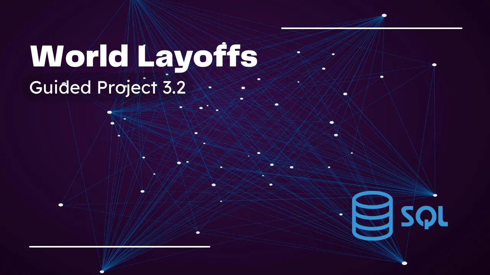

April 25, 2026
Deliver actionable insights from Acme Co.’s 2014–2018 sales data to:
Identify top-performing products, channels, and regions driving revenue and profit Uncover seasonal trends and anomalies for optimized planning Spot pricing and margin risks from outlier transactions Inform pricing, promotion, and market-expansion strategies These findings will guide the design of a Power BI dashboard to support strategic decision-making and sustainable growth.
.png)
.png)
This project analyzes customer shopping behavior using transactional data from 3,900
purchases across various product categories. The goal is to uncover insights into spending
patterns, customer segments, product preferences, and subscription behavior to guide strategic
business decisions.

An E-Commerce Sales Analysis portfolio project examines online retail data using tools like Python, SQL, and Power BI/Tableau to evaluate revenue growth, product performance, customer behavior, and regional trends. It helps businesses optimize inventory, marketing, and pricing strategies.

End-to-end SQL data cleaning project on a real-world layoffs dataset using MySQL, CTEs, window functions, data standardization, and quality validation techniques.

This project demonstrates the process of cleaning and preparing raw data using Microsoft Excel. Real-world datasets often contain missing values, duplicate records, inconsistent formats, and data quality issues that must be addressed before analysis.
The objective of this project is to transform messy data into a clean, structured, and analysis-ready dataset using Excel's built-in data cleaning features.

This project focuses on analyzing Netflix's content catalog to uncover insights about movies, TV shows, genres, countries, ratings, and release trends. Using Python, SQL, and data visualization techniques, the project transforms raw Netflix data into meaningful business insights that can support content strategy and audience analysis.
The project demonstrates the complete data analysis lifecycle, including data cleaning, exploration, transformation, visualization, and insight generation.

End-to-end COVID-19 data analysis project using SQL, Python, and visualization tools to analyze global pandemic trends, vaccination progress, and public health insights.